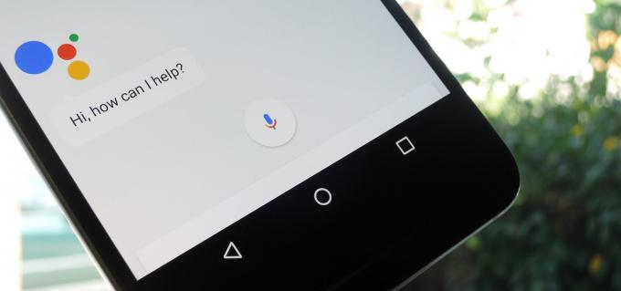

Description of my new site.
May 2, 2018
Jedná se nejčastěji o hlasové asistenty v našich telefonech, jako jsou například Google Assistent, Siri, Cortana. Může se však jednat o chatbota na Vašem oblíbeném webu, kde rádi nakupujete. Může Vám doporučit zboží, které by Vás mohlo zajímat nebo dokonce poradit s nákupem. Ne že by Vám řekl, co domů potřebujete, ale spíš Vám pomůže vyřídit objednávku, případně Vás odkáže na jinou pomoc.

Hlasového asistenta Google máte na každém zařízení s Adroidem. Aktivovat ho můžete tak, že při odemčeném zařízení řeknete “OK Google” a pak příkaz, který chcete aby vykonal.
Nejčastěji používám příkazy jako:
Případně můžeme zadávat hlasové pokyny do Google navigace. To vše a mnohem více jsou příklady z běžné praxe každého z nás, kde se setkáváme s konverzačním rozhraním.